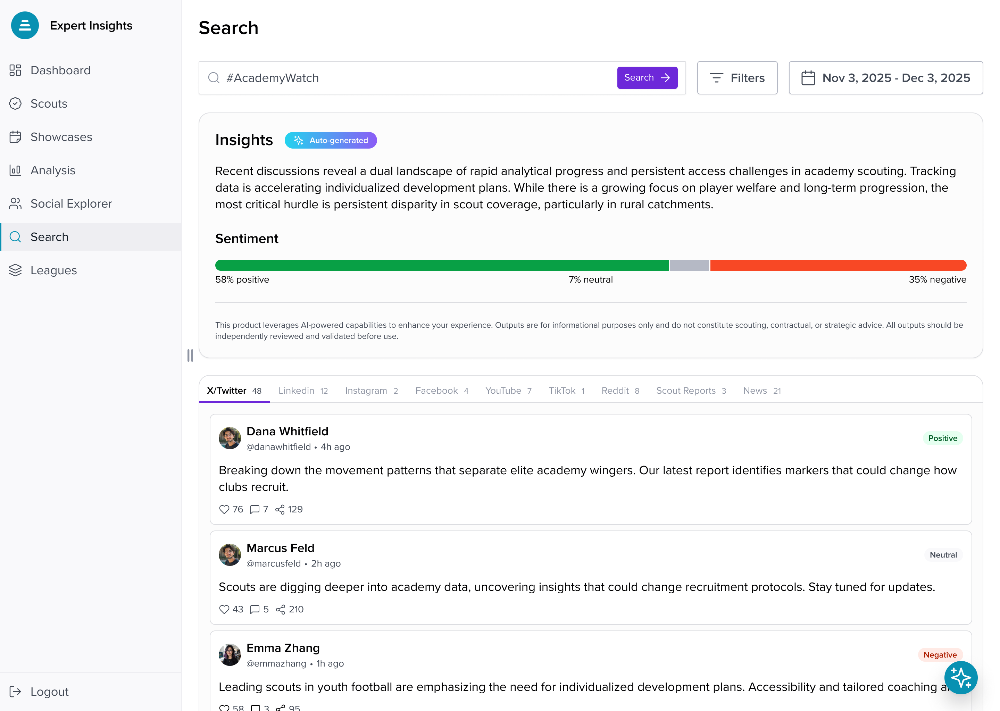
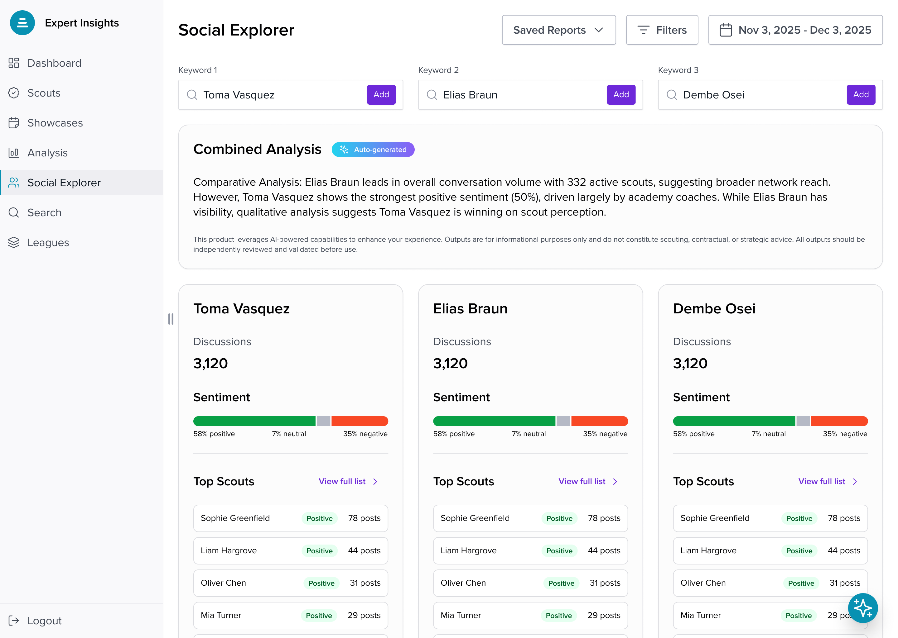
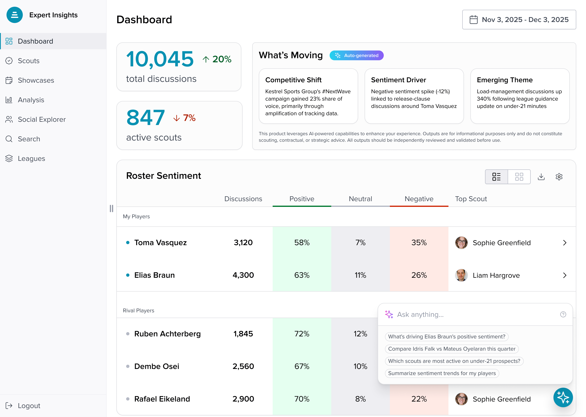
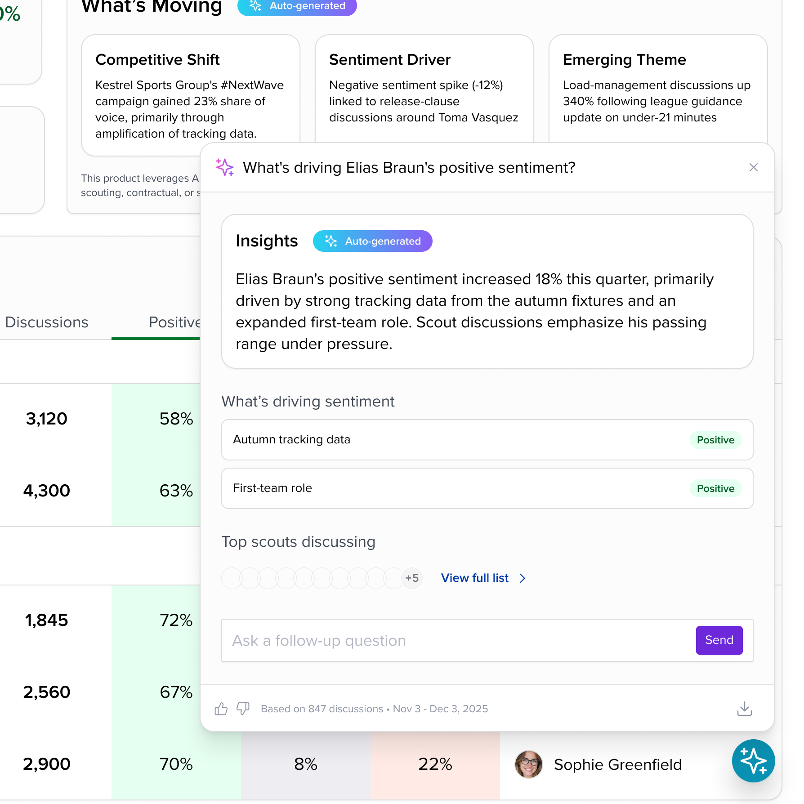
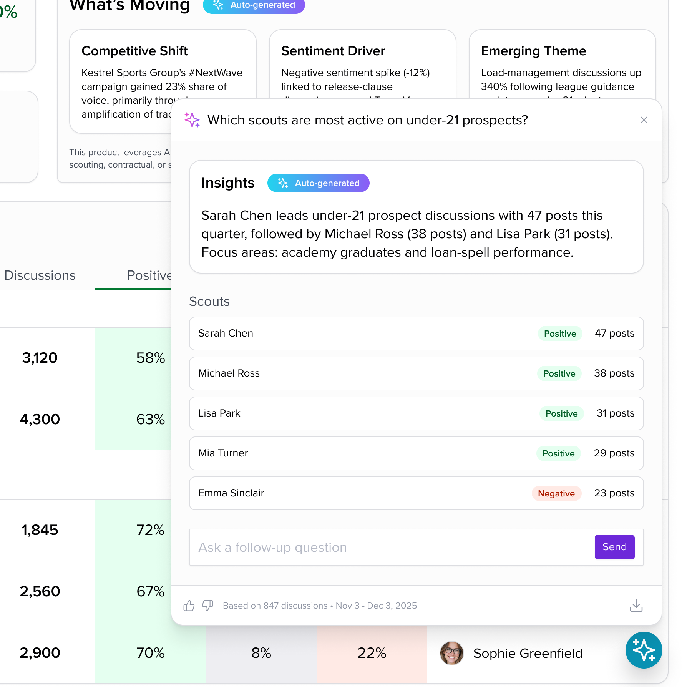
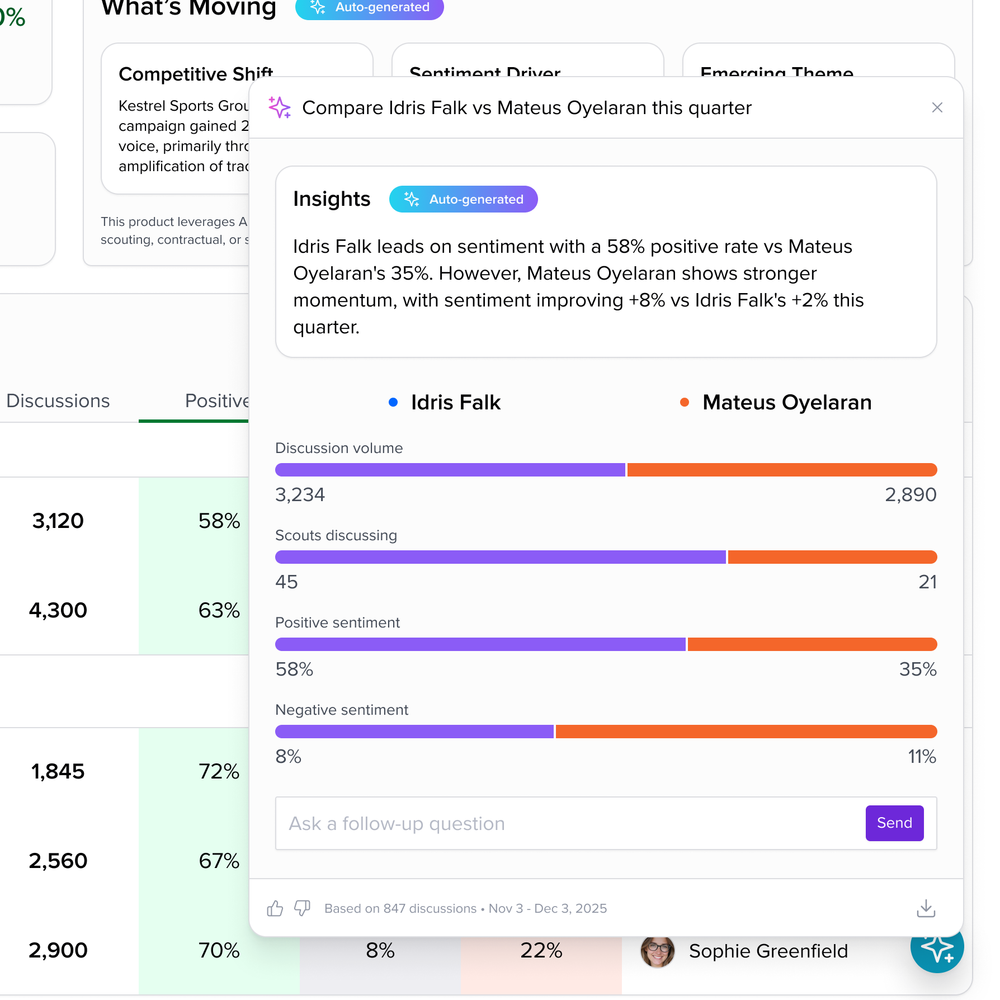

Ten thousand discussions, one screen.
Agencies need to know what scouts are saying about their players and their rivals' players, whether it's said on social platforms or in the press. The platform, built for a client under NDA, pulls that conversation from nine channels into one feed. I led design across the platform, from the dashboard and search through to comparative analysis.
The core design problem is density. An agency scans dozens of players and thousands of discussions in one sitting, with the sentiment shifting under them. The answer is a strict tabular language. Sentiment always reads in the same three-color split and numbers stay in columns. Every list ends in a person you can click, because the whole point is knowing which scout to talk to next.

Auto-generated, and labeled that way.
The platform generates plain-language summaries of what's moving and why, such as a rival gaining share of voice or a sentiment dip tied to one player. When a single evaluation can move a transfer fee, that kind of synthesis needs guardrails. Anything auto-generated is labeled at the point of reading, with a standing disclaimer that outputs are informational and need independent review. The summaries speed up the work, but the person remains responsible for the judgment.

Compare the same view side by side.
Roster questions are rarely about one name. Social Explorer runs up to three side by side, with a combined analysis on top and matching sentiment and scout panels below, so differences read across a single row rather than across three exports.

The answer takes the shape of the question.
The ask panel opens over the dashboard with four suggested questions, and the answer comes back in a different shape for each kind of question. Asking why a player's sentiment moved returns a list of drivers, each with its own sentiment chip. Asking who is most active on a topic returns a ranked list of scouts with their post counts. Asking for two players against each other returns paired bars for volume and sentiment.
Every answer carries the auto-generated label and a line giving the discussions and dates it drew on, with a field for the follow-up underneath. The roster table stays visible behind the panel, so an answer can be checked against the numbers without leaving the screen.



